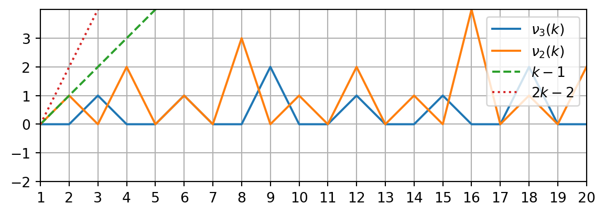

原根、原根存在定理和模 m 剩余类环的乘法结构
math
algebra
number theory
Abstract
应用代数工具，对模 \(m\) 剩余类环 \(\mathbb Z / m \mathbb Z\) 的乘法结构做出流畅的刻画，作为推论导出原根存在定理．面向有朴素抽象代数基础的 OI/XCPC 算法竞赛选手和学习过本科抽象代数课程的同学．
1 序
这次来聊聊原根．何谓原根？本原单位根是也．何谓本原单位根？自乘若干次而归于一者，谓之单位根．若兼为乘法生成元，则称其本原，以示强调．原根有三定理，一是判定原根的方法，二是原根存在的条件，三是对原根的计数1．其中原根存在定理最难证明．固然有初等数论的证法，然而技巧性较强，或有碍阅读，亦难于记忆．使用代数方法研究原根，虽对基础有一定要求，证明亦不短，但胜在自然流畅，更具启发性．本文宗旨，应用代数工具，对模 \(m\) 剩余类环 \(\mathbb Z / m \mathbb Z\) 的乘法结构做出流畅的刻画，兼以部分随性的发散讨论，原根存在定理则作为推论导出．我们介绍的内容对有经验的读者或属“自证不难”，但完整证明的逻辑链条较长，需要了解原根的人群亦不一定有系统的代数基础（如 OI / XCPC 算法竞赛选手），故整理于此，供略知代数一二的同学按图索骥．
1 这三个定理的提法来自 OI Wiki 的原根介绍．
篇幅所限，无法完全做到 self-contained，故如下阅读建议供读者参考：
完全没有抽象代数基础：
可能在阅读中遇到较大的困难．
有朴素的抽象代数基础：
- 如数学基础不错的 OIer / XCPCer
- 如上过一学期计算机系离散数学课程
- 如会证 Polya 计数 / 理解群论的 Lagrange 定理 / 用抽代观点思考过初等数论问题
小节 2 讨论原根三定理，小节 3 讨论中国剩余定理，小节 4 介绍了看待模 \(p^\alpha\) 乘法的 \(p\) 进制观点，小节 5 用 Dirichlet 卷积和 Möbius 反演证明了很强的结果，小节 6 讨论了二项式系数的含 \(p\) 量，大部分内容基础要求不高，有料有用，亦可提升观点，敬请放心食用．其余涉及 Sylow 定理、直积识别等进阶知识的内容，请据个人基础、兴趣和胆识酌情阅读．
有抽象代数基础：
- 如上过一学期抽象代数课程
应可顺畅阅读全文．模 \(m\) 剩余类环 \(\mathbb Z / m \mathbb Z\) 有较简单的显式表达，其乘法结构却不甚平凡，是操练抽象代数的良好玩具．本文大部分内容整合改编自 [1]，有经验的读者可参考本文查漏补缺、按图索骥．
2 原根三定理：代数观点速通
研究模 \(m\) 加法和乘法的结构，便是研究模 \(m\) 剩余类环 \(Z_m := \mathbb Z / m \mathbb Z\) 的性质．特别地，若仅关心其上乘法的结构，可取 \(Z_m\) 全体乘法可逆元构成的乘法群（亦作简化剩余系） \[ Z_m^\times = \{ a \in Z_m : \gcd(a,m) = 1 \} \] 做研究，事实上，\(Z_m^\times\) 恰由全体 \(Z_m\) 作为加法群的生成元构成，而 Euler totient 函数 \(\varphi(m)\) 恰为此群的大小——这些都是数论中经典的 Bézout 定理的简单推论．
注记. 值得一提，我们现在虽专注于模 \(m\) 乘法的研究，但 \(Z_m\) 乘法与加法并非相互割裂．环上的每一乘法可逆元 \(a\) 自然诱导出加法群的自同构 \(x \mapsto ax\)，故有 \(Z_m^\times \hookrightarrow \operatorname{Aut}(Z_m)\)2．事实上，由于 \(Z_m\) 作为 \(m\) 阶加法循环群结构简单，仅乘法可逆元便可诱导出其加法群的全部自同构，因此上述单同态亦具有满性：\(Z_m^\times \cong \operatorname{Aut}(Z_m)\)3．综上，\(Z_m\) 上的可逆乘除操作，同 \(Z_m\) 作为加法群的自同构存在一一对应关系；探明模 \(m\) 乘法的结构，亦对研究模 \(m\) 加法有所裨益．这种观点将立刻在 定理 2（原根个数定理）的证明中发挥效用．
2 以后使用 \(\hookrightarrow\) 表单同态，\(\twoheadrightarrow\) 表满同态，\(\operatorname{Aut}(Z_m)\) 为 \(Z_m\) 作为加法群的全体自同构所构成的群．
3 读者自证不难．亦可参见 [1, section 4.4, proposition 16, p. 135]
柿子挑软的捏，我们自然关心那些较为简单的模 \(m\) 乘法的结构．何谓简单？\(Z_m^\times\) 是循环群便是简单——因其只需一个元素便可生成——而这一元素，即（定义）为原根．译为白话，模 \(m\) 意义下的原根 \(g\) 定义为满足 \[ g^{k} = 1 \pmod m \iff \varphi(m) \mid k \] 的某一非零整数．
\(\mathrm{P} \subseteq \mathrm{NP}\)，故在寻找原根前先讨论如何判定原根．原根判定定理给出了判定某一 \(g \in Z_m^\times\) 是否为原根的简易方法：
证明. 读者自证不难．
注记. 这一定理可以认为是有限循环群上的 Lagrange 定理的一个应用：对任意 \(d \mid n\)，任意 \(n\) 阶循环群都保有一个 \(d\) 阶子群；反之，任意子群的阶一定是 \(n\) 的因子．
假定已知模数 \(m\) 保有一原根，我们进而关心其所有原根之间的相互结构．特别地，我们关心原根有多少个：
证明. 在我们的叙述下，原根个数定理成为一句废话．根据条件，作为乘法群的 \(Z_m^\times\) 与加法群 \(Z_{\varphi(m)}\) 同构，而 \(Z_{\varphi(m)}\) 当然可以根据其上的加法定义出乘法，进而升级为环．正如前文提到的，\(Z_{\varphi(m)}\) 全体（加法）生成元恰为 \(Z_{\varphi(m)}^\times\) ．再通过上述同构关系，我们便得到 \(Z_m^\times\) 中的所有生成元的数量及其相互关系．
注记. 从计算原根的角度来看，上述结果并未给出显式给出 \(Z_m^\times\) 的生成元，这是因为 \(Z_m^\times\) 与 \(Z_{\varphi(m)}\) 之间同构的具体形式尚不明确．但我们可以利用原根判定定理（和快速幂）从小到大逐一验证．由于原根数量高达 \(\varphi(\varphi(m))\) 个，一般很快就能找到．事实上当模数为质数 \(p\) 时，最小原根有渐进上界估计 \(O(n^{1/4 + \varepsilon})\) 和下界估计 \(\Omega(\log p)\)．OI Wiki 给出了上述结果的一些参考文献．
当然，并非每个 \(Z_m^\times\) 都是循环群，因此不是所有模数 \(m\) 都保有原根．原根存在定理给出了使得 \(Z_m^\times\) 确为循环群的所有 \(m\)：
这一定理不如前两个定理显然，需要我们对环 \(Z_m\) 的结构做更深的探讨．事实上，与其只关心 \(Z_m^\times\) 是不是循环群，不如更进一步，看看 \(Z_m^\times\) 究竟同构于哪些循环群的直积；与其只关心 \(Z_m\) 的乘法结构，不如将本来就与乘法紧密相关的加法结构一并纳入考虑．在之后的讨论中，我们将先解剖出模 \(m\) 剩余类环 \(Z_m\) 的结构，随后具体讨论 \(Z_m^\times\) 的结构，顺带产生关于原根存在性的结果．
3 \(Z_m\) 的结构：中国剩余定理
既然是研究环与同余的结构，就必然要提到中国剩余定理．回忆数论中最常见的中国剩余定理：
注意到4 \[ \delta_i \bmod m_k = \delta (i=k) \] 这是中国剩余定理的神髓所在：构造一组强力的“基底”，其中每一元素在其对应模数下的表现恰似单位元，而在其它模数下全无效力．我们指出，这一构造在中国剩余定理的环论版本中同样管用．先将数论中的中国剩余定理用环论的语言重述：
4 这里我们记 \[\delta(P) = \begin{cases}1 & P \text{ is true} \\ 0 & \text{otherwise}\end{cases}\]
证明. 仅需对构造中使用的“基底” \(\delta_i\) 作一点说明．请读者关注以下等式 \[ 1 = \prod_{j \neq i} (x_{i,j} + y_{i,j}) \] 注意到右侧乘积展开后，除 \(\prod_{j \neq i} y_{i,j}\) 一项外，其余各项均至少含有一个 \(x_{i,j} \in m_i \mathbb Z\)，故 \(\prod_{j \neq i} y_{i,j} = 1 \pmod{m_i \mathbb Z}\)．同时，由于 \(y_{i,j} \in m_j \mathbb Z\)，亦有 \(\prod_{j \neq i} y_{i,j} = 0 \pmod{m_k \mathbb Z}\) 对所有 \(k \neq i\) 成立．综上知 \[ \delta_i = \delta(i=k) \pmod{m_k \mathbb Z} \]
证明. 请读者仿照上例练习．
注记. 这里得到的环论版本的中国剩余定理的证明将是构造式的．常见的代数书目在叙述证明时一般诉诸数学归纳法——固然是严谨的选择，但牺牲了一点神韵．我们给出两个参考：
[1, section 7.17, theorem 17, p. 265]：是本文主要参考的证明，但是有单位元的交换环上的特化版本．环上的交换性并不是中国剩余定理的本质要求，其作用仅为使得环上互素理想 \(I,J\) 满足 \(I J = I \cap J\)．特别地，这使得应用在整数环 \(\mathbb Z\) 上的中国剩余定理的在计算上更为简洁： \[ \mathbb Z / (\prod_{i=1}^n m_i) \mathbb Z = \mathbb Z / (\bigcap_{i=1}^n m_i \mathbb Z) \]
[2, theorem 2.25, p. 131]：给出了不要求环上单位元存在的更加一般的中国剩余定理．
环论版本的中国剩余定理功用强大．除了在数论领域的经典应用，在多项式环上，中国剩余定理将多项式多点求值与多点插值联系起来，某种程度上为离散 Fourier 变换提供了同构视角下的理解．感兴趣的读者敬请移步此处．最强大的中国剩余定理可以扩展到模上：
回到正题．我们在研究环 \(Z_m = \mathbb Z / m\mathbb Z\) 的结构，而 定理 5 已经做出了巨大的贡献：设 \(m\) 有质因子分解 \(m = p_1^{\alpha_1} p_2^{\alpha_2} \dots p_k^{\alpha_k}\)，则环 \(Z_m\) 便可被拆分成若干大小互素的环的直积： \[ Z_m \cong Z_{p_1^{\alpha_1}} \times Z_{p_2^{\alpha_2}} \times \dots \times Z_{p_k^{\alpha_k}} \] 作为环的附属结构，\(Z_m\) 的乘法群也得到自然的拆解： \[ Z_m^\times \cong \left( Z_{p_1^{\alpha_1}} \times Z_{p_2^{\alpha_2}} \times \dots \times Z_{p_k^{\alpha_k}} \right)^\times = Z_{p_1^{\alpha_1}}^\times \times Z_{p_2^{\alpha_2}}^\times \times \dots \times Z_{p_k^{\alpha_k}}^\times \] 余下的工作，是解剖环 \(Z_{p^{\alpha}}\) 的乘法群 \(Z_{p^{\alpha}}^\times\) 的结构．
4 \(Z_{p^\alpha}^\times\) 的结构：分裂的商同态
加法和乘法运算，但对 \(p^\alpha\) 取模，似乎不太熟悉？事实上，将 \(0\) 到 \(p^\alpha -1\) 间的所有整数 \(a\) 写为 \(\sum_{i=0}^{\alpha - 1} a_i p^i\) 的 \(p\) 进制形式，是刻画该剩余类环的一种良好方法，其实质为以 \(p \in Z_{p^\alpha}\) 带入整系数多项式环得到的一个 \(\mathbb Z[x] \to Z_{p^\alpha}\) 的环同态．读者可在接下来的探究中借其指导直觉．
粗略一瞥 \(Z_{p^\alpha}\) 中的可逆元素，易得如下几种不同视角： \[ Z_{p^\alpha}^\times = \{ a \in Z_{p^\alpha} : \gcd(a, p^\alpha) = \gcd(a, p) = 1 \} = \{ a \in Z_{p^\alpha} : a_0 \neq 0 \} \] 简单计数知其大小为 \(\varphi(p^\alpha) = p^\alpha - p^{\alpha - 1} = p^{\alpha - 1} (p - 1)\)．一个受此启发的想法是，如果仅在模 \(p\) 意义下考虑 \(Z_{p^\alpha}\) 中的运算——即只看 \(p\) 进制表示下 \(a_0\) 的变化情况，自然得到商同态 \(\pi\)： \[ \begin{aligned} Z_{p^\alpha} &\twoheadrightarrow Z_{p^\alpha} / p Z_{p^\alpha} \cong Z_p \\ a \bmod p^\alpha &\mapsto a \bmod p \end{aligned} \] 注意环同态保持可逆元，故若只考虑乘法结构，\(\pi\) 也给出了交换群 \(Z_{p^\alpha}^\times \twoheadrightarrow Z_p^\times\) 的一个满同态，其核 \(\ker \pi\) 恰为 \(1 + p Z_{p^\alpha}\)：由模 \(p\) 余 \(1\) 元素构成的 \(p^{\alpha-1}\) 阶乘法子群．此外我们还有 \(Z_{p^\alpha}^\times / \ker \pi \cong Z_p^\times\)．将上述事实用正合列5紧凑书写如下：
5 关于正合列，见 [1, section 10.5]
使用商同态研究交换群的结构，最好的情况是这个同态分裂——在这里即希望 \(Z_p^\times\) 在 \(Z_{p^\alpha}^\times\) 中有一个同构的拷贝：其由分裂同态 \(\psi\) 的像给出，满足 \(\pi \circ \psi = \operatorname{id}_{Z_p}\)．此时由子群直积的识别定理 [1, section 5.4, theorem 9, p. 171] 或分裂正合列常识，我们有 \[ Z_{p^\alpha}^\times \cong \left( 1 + p Z_{p^\alpha}^\times \right) \times Z_p^\times \]
但真的可以吗？这里提供两类风格迥异的处理方法．
4.1 正面进攻：Hensel 引理
我们直接找到 \(Z_p^\times\) 在 \(Z_{p^\alpha}^\times\) 中的像 \(\psi(Z_p^\times)\) 的具体表达——这需要我们找到 \(Z_{p^\alpha}^\times\) 中的元素 \(a\) 满足： \[ \begin{aligned} a &\neq 1 \pmod{p} \\ a^{p-1} &= 1 \pmod{p^\alpha} \end{aligned} \] 考虑归纳地寻找：
初值：寻找非单位元的 \(a = a_0 \in Z_p^\times\) 使得 \(a^{p-1} = 1 \pmod{p}\)，即模素数原根的存在性问题——并非平凡的问题，我们留待 小节 5 处理．
归纳：假定已经获得 \[ \begin{aligned} a &\neq 1 \pmod{p} \\ a^{p-1} &= 1 \pmod{p^n} \end{aligned} \] 的解 \(a = a_n \in Z_{p^n}^\times\)，去构造 \(a = a_{n+1} \in Z_{p^{n+1}}^\times\) 使得 \[ a^{p-1} = 1 \pmod{p^{n+1}} \]
这种归纳手法可以推广到其它不少地方（\(p\)-adic 数、形式幂级数的隐函数定理等），并被统一地称为“Hensel 引理”．
下面处理归纳部分．由 \(p\) 进制观点启发，不妨设存在 \(b_n \in Z_p\) 使得 \(a_{n+1} = a_n + b_n p^n \pmod{p^{n+1}}\)．同时设存在 \(t_n \in Z_p\) 使得 \(a_n^{p-1} = 1 + t_n p^n \pmod{p^{n+1}}\)．则 \[ \begin{aligned} 1 &= a_{n+1}^{p-1} \\ &= \left( a_n + b_n p^n \right)^{p-1} \\ &= a_n^{p-1} + \binom{p-1}{1} a_n^{p-2} b_n p^n + \dots \pmod{p^{n+1}} \\ &= a_n^{p-1} + a_n^{p-2} b_n (p-1) p^n \\ &= 1 + t_n p^n - a_n^{p-2} b_n p^n \\ &= 1 + ( t_n - a_n^{p-2} b_n ) p^n \pmod{p^{n+1}} \end{aligned} \] 这意味着 \(t_n = a_n^{p-2} b_n = a_n^{-1} b_n \pmod{p}\) 或 \(b_n = t_n a_n \pmod{p}\)．故 \[ a_{n+1} = a_n + b_n p^n = a_n (1 + t_n p^n) = a_n^p \pmod{p^{n+1}} \] 便是我们所需的构造．
注记. Hensel 引理的递归构造其实暗藏更多结构．我们将一点直觉在下图中展示，感兴趣的读者可参见 [3, section 6–7]．
4.2 旁敲侧击：从基数下手
我们另从 \(Z_{p^\alpha}^\times\) 的大小——\(p^{\alpha - 1} (p - 1)\)——的角度下手试试6．固然 \(p^\alpha\) 与 \(p-1\) 互素，故
6 本节内容，另可参考 [1, section 9.5, corollary 20, p. 314]．
如果你了解有限交换群的基本结构：由有限交换群基本定理 [1, section 5.2]
如果你学过有限群的 Sylow 定理 [1, section 4.5]：考虑到 \(Z_{p^\alpha}^\times\) 是交换群，其所有子群均为正规子群，熟记如下结果 [1, section 6.1, theorem 3, p. 191]
证明. 考虑 Sylow 定理关于 Sylow \(p\)-子群共轭性的结果和子群直积的识别定理，有经验的读者应不难证明，此处略去．
如果你了解主理想整环上模的基本结构：考虑将交换群 \(Z_{p^\alpha}^\times\) 视为 \(\mathbb Z\)-模，则其被 \(p^{\alpha-1} (p-1) \in \mathbb Z\) 消灭，由于 \(\gcd(p^{\alpha-1}, p-1) = 1\)，根据核分解定理，\(Z_{p^\alpha}^\times = \ker p^{\alpha-1} \oplus \ker (p-1)\)
便知道 \(Z_{p^\alpha}^\times\) 是其两个大小分别为 \(p^{\alpha - 1}\) 和 \(p-1\) 的子群（记为 \(Q\) 和 \(S\)）的（内）直积．现在结合上一段构造的乘法群商同态 \(\pi: Z_{p^\alpha}^\times \to Z_p^\times\) 对 \(Q\) 和 \(S\) 作考察：
- 考虑到 \(Z_{p^\alpha}^\times \cong Q \times S\)，故 \(Z_{p^\alpha}\) 的 \(p^{\alpha-1}\) 阶子群只有 \(Q\) 唯一一个．而已经知道 \(|1 + p Z_{p^\alpha}^\times| = p^{\alpha-1} = |Q|\)，故立得 \(Q = 1 + p Z_{p^\alpha}^\times\)．
- 将 \(\pi\) 限制在 \(S\) 上得到新同态 \(\pi \vert_S : S \to Z_p^\times\)，其核为 \(S \cap 1 + p Z_{p^\alpha}^\times\)．注意 \(|S| = p-1\) 且 \(|1 + p Z_{p^\alpha}^\times| = p^\alpha\)，故这个核只能是平凡的，即 \(\pi \vert_S\) 是单同态．再考虑到 \(|Z_p^\times| = p - 1 = |S|\)，我们得到 \(S \cong Z_p^\times\)．
无论采用何种方法，最终我们得到 \[ Z_{p^\alpha}^\times \cong \left( 1 + p Z_{p^\alpha}^\times \right) \times Z_p^\times \] 接下来的工作是分别研究 \(1 + p Z_{p^\alpha}^\times\) 和 \(Z_p^\times\)．
5 \(Z_p^\times\) 的结构：域的有限乘法子群
因为 \(Z_2^\times\) 是平凡群，故只需研究 \(p \ge 3\) 的情况．事实上我们已经比较清楚环 \(Z_p\) 的结构——它是一个域．[1, section 9.5, pp. 313–314] 给出了一种利用域上多项式环性质证明 \(Z_p^\times\) 是循环群的神奇做法．我们知道，域上的 \(n\) 阶多项式至多只能有 \(n\) 个根（数论中又名 Lagrange 定理），而 \(Z_p^\times\) 内满足 \(x^d = 1\) 的元素（即 \(d\) 次单位根）都是多项式 \(x^d - 1\) 的根，故 \(d\) 次单位根的个数至多为 \(d\) 个．令人惊奇的是，如此松弛的估计足以确定 \(Z_p^\times\) 的结构．请看如下定理 [1, section 6.1, proposition 5, p. 192]．
我们提供 2.5 种不同的证明．
证明 (Sylow 定理向). 首先注意到对任意正整数 \(n\)，\(G\) 中若存在 \(n\) 阶子群则必定唯一，且恰为 \(G_n := \{ g \in G: g^n = 1 \}\)．这是因为任何 \(n\) 阶子群内的元素均为 \(n\) 次单位根，数量已达到条件中给出的 \(n\) 个的上限，故无法再支撑另一 \(n\) 阶子群的存在．特别地，\(G\) 的 Sylow \(p\)-子群 \(S_p\) 存在且唯一．由 定理 8，\(G\) 为 \(G\) 的各个 Sylow \(p\)-子群 \(S_p\) 的（内）直积．于是只需证每个 \(S_p\) 都是循环群．记 \(\alpha\) 是 \(p\) 在 \(n\) 中的指数．由 Sylow 定理，\(S_p\) 有一个 \(p^{\alpha - 1}\) 阶子群 \(H_p\)，据前述观察 \[ H_p = \{ g \in G : g^{p^{\alpha-1}} = 1\} < \{g \in G : g^{p^\alpha} = 1\} = S_p \] 故任取 \(g \in S_p \setminus H_p\) 就得到一个 \(p^{\alpha}\) 阶元，故 \(S_p\) 是循环群．
下面是一个使用 Dirichlet 卷积 / Möbius 反演的数论风格的证明 [1, section 9.5, exercise 6, p. 315]．
证明 (数论向). 记 \[ \begin{aligned} g(n) &:= \#\{ x \in G: x^n = 1 \} \\ h(n) &:= \#\{ x \in G: \operatorname{ord}(x) = n \} \end{aligned} \] 则 \[ g(n) = \sum_{d \mid n} h(n) \] 依次应用 Möbius 反演、条件假设和 Dirichlet 卷积 \(\varphi = \mu * \mathrm{id}\) 得 \[ h(n) = \sum_{d \mid n} \mu(\frac n d)g(d) \leq \sum_{d \mid n} \mu(\frac n d) d = \varphi(n) \] 但根据 \(h\) 的定义和 Dirichlet 卷积 \(\varphi * I = \mathrm{id}\) 有 \[ \sum_{n \mid |G|} h(n) = |G| = \sum_{n \mid |G|} \varphi(n) \] 这逼迫 \(h(n)=\varphi(n)\) 对所有 \(n \mid |G|\) 成立．特别地，\(h(|G|) = \varphi(|G|) \geq 1\)，故 \(G\) 是循环群．
最后半种证明方法相对简明，但需增加群 \(G\) 交换的条件．
证明 (交换群的特例). 由有限交换群基本定理，\(G\) 内存在阶为群 \(G\) 的指数（exponent） \[ \exp G := \min \{n \in \mathbb N_+ : g^n = 1,\, \forall g \in G \} \] 的元素．故只需证 \(\exp G = |G|\)．根据定义，\(G\) 中所有元素都是 \(\exp G\) 次单位根，故由关于单位根数量上限的假设，\(|G| \leq \exp G \leq G\)，故 \(\exp G = |G|\)，得证．
结合前述讨论，我们已经证明 \(Z_p^\times\) 是循环群，并事实上导出了如下广为人知的结果 [1, section 9.5, proposition 18, p. 314]
证明. 与本节开始的讨论相仿．考察 \(G\) 中所有 \(d\) 次单位根，它们均为 \(F[x]\) 中多项式 \(x^d - 1\) 的根，但域上的 \(d\) 次多项式至多只有 \(d\) 个根，故 定理 9 的条件得到满足．
注记. 对 \(F\) 的要求甚至还可进一步减弱为整环 \(R\)——这是因为在关于多项式根数量上限的 Lagrange 定理的证明中，带余除一个首一多项式并不需要可逆元的参与．这一结果亦可通过取 \(R\) 的分式域直接弱化得到．
设整环 \(R\) 的 \(n\) 次单位根子群 \(U_n := \{ x \in R: x^n = 1 \} \leq \operatorname{Tor}R^\times \leq R^\times\)，它们的并构成了 \(R\) 的乘法群 \(R^\times\) 的挠子群（torsion subgroup）\(\operatorname{Tor}R^\times\)．我们的推导实际上说明：
每个 \(U_n\) 都是循环群，也是乘法群 \(R^\times\) 唯一的 \(n\) 阶子群．
若 \(d \mid n\)，则 \(U_d \leq U_n\)．特别地，阶数互素的两群之交平凡．
使用 \(\mathbb Z\)-模风格的记号， \[ \operatorname{Tor}R^\times = \bigoplus_{p \in \text{prime}} \bigcup_{\alpha=1}^{+\infty} U_{p^\alpha} \] 故 \(\operatorname{Tor}R^\times\) 的结构似乎和 \(\mathbb Q/\mathbb Z\) 和 \(p\) 进数 \(\mathbb Z_p\) 有一定联系．笔者能力有限，有机会再填坑．
6 \(1 + p Z_{p^\alpha}^\times\) 的结构：二项式定理与含 \(p\) 量估计
这里处理 \(1 + p Z_{p^\alpha}^\times\) 的结构的办法相当暴力 [1, section 2.4, exercises 21–23, p. 60]：
- 当 \(p\) 是奇质数时，我们将直接找到一个 \(1 + p Z_{p^\alpha}^\times \le Z_{p^\alpha}^\times\) 中的一个 \(p^{\alpha-1}\) 阶元，据此得到 \(1 + p Z_{p^\alpha}^\times \cong Z_{p^{\alpha - 1}}\)；
- 当 \(p = 2\) 时（此时 \(Z_p^\times\) 是平凡群，故 \(1 + p Z_{p^\alpha}^\times = Z_{2^\alpha}^\times\)），我们将直接找到一个 \(1 + p Z_{p^\alpha}^\times\) 中的 \(2^{\alpha-2}\) 阶元，再找到两个不同的 \(2\) 阶元，据此证明 \(1 + p Z_{p^\alpha}^\times \cong Z_2 \times Z_{2^{\alpha - 2}}\)．
先介绍一个关于二项式含 \(p\) 量的有趣结果．
证明. 基本的想法是将二项式系数展开写为 \[ \binom{p^\alpha}{k} = \frac{p^\alpha (p^\alpha -1) \dots (p^\alpha -k+1)}{1 \times 2\times \dots \times k} \] 并观察从 \(\nu_p\) 从 \(\binom{p^\alpha}{k-1}\) 到 \(\binom{p^\alpha}{k}\) 取值的变化．注意到 \(\nu_p(k) = \nu_p (p^\alpha - k)\) 对 \(1 \le k \le p^\alpha - 1\) 成立，故 \[ \nu_p (\binom{p^\alpha}{k}) - \nu_p (\binom{p^\alpha}{k-1}) = \nu_p (p^\alpha -k+1) - \nu_p(k) = \nu_p(k-1) - \nu_p(k) \] 连同初值 \(\nu_p (\binom{p^\alpha}{0}) = \alpha\)，命题得证．
Code
import numpy as np
import matplotlib.pyplot as plt
def nu(p,x):
cnt = 0
while x and x%p == 0:
x //= p
cnt += 1
return cnt
a = 3
p = 3
npk = [0]
for k in range(1,p**a+1):
npk.append(a-nu(p,k))
fig, ax = plt.subplots()
ax.plot(list(range(0,p**a+1)),npk)
ax.grid(True)
ax.set_aspect('equal', 'box')
ax.set_xticks(range(0,27+1))
ax.set_yticks(range(0,3+1))
ax.set_xlim((0, 27))
ax.set_ylim((0, 3))
plt.show() 继续证明前我们再做一些观察：
Code
lim = 20
fig, ax = plt.subplots()
x = np.array(range(1,lim+1))
ax.plot(x,list(map(lambda k: nu(3,k), x)), label = "$\\nu_3(k)$")
ax.plot(x,list(map(lambda k: nu(2,k), x)), label = "$\\nu_2(k)$")
ax.plot(x,x-1, linestyle="dashed", label = "$k-1$")
ax.plot(x,2*x-2, linestyle="dotted", label = "$2k-2$")
ax.grid(True)
ax.set_aspect('equal', 'box')
ax.set_xticks(x)
ax.set_yticks(range(-2,4))
ax.set_xlim(1,lim)
ax.set_ylim(-2,4)
ax.legend()
plt.show()
受 图 4 启发，容易证明：
- \(k-1 \ge \nu_p (k)\) 对所有质数 \(p\) 和 \(k \ge 1\) 成立；
- \(k-2 \ge \nu_p (k)\) 对所有奇质数 \(p \ge 3\) 和 \(k \ge 2\) 成立；
- \(2k-2 \ge \nu_2 (k)\) 对所有 \(k \ge 1\) 成立．
- \(2k-3 \ge \nu_2 (k)\) 对所有 \(k \ge 2\) 成立．
这四个不等式的微妙区别是导致奇质数和 \(2\) 需要分别讨论的罪魁祸首之一．
证明. 首先考察 \[ (1+p)^{p^{\alpha-1}} = 1 + \sum_{k=1}^{p^{\alpha-1}} \binom{p^{\alpha-1}}{k} p^k \] 应用 命题 1 大力考察求和每一项的含 \(p\) 量，得到 \[ \nu_p(\binom{p^{\alpha-1}}{k} p^k) = \alpha - 1 - \nu_p (k) + k \] 注意 \(k-1 \ge \nu_p (k)\) 对 \(k \ge 1\) 永远成立，故求和每一项的含 \(p\) 量均至少为 \(\alpha\)，故 \[ (1+p)^{p^{\alpha-1}} \equiv 1 \pmod{p^\alpha} \] 若 \(\alpha = 1\)，则命题已经得证．下面来看为什么 \(p \ge 3\), \(\alpha \ge 2\) 时会有 \[ 1 + \sum_{k=1}^{p^{\alpha-2}} \binom{p^{\alpha-2}}{k} p^k = (1+p)^{p^{\alpha-2}} \not \equiv 1 \pmod{p^\alpha} \] 同样的方法计算含 \(p\) 量 \[ \nu_p(\binom{p^{\alpha-2}}{k} p^k) = \alpha - 2 - \nu_p (k) + k \] 由上述不等式关系，右式仅在 \(k=1\) 时小于 \(\alpha\)，因此和式中只有 \(\binom{p^{\alpha-2}}{1} p = p^{\alpha - 1}\) 一项在模 \(p^\alpha\) 意义下产生了额外贡献——当然 \(1 + p^{\alpha-1} \not \equiv 1 \pmod{p^\alpha}\)，得证．
证明. 请读者仿照上例练习．考虑利用二项式定理展开 \((1+2^2)^{2^{\alpha-2}}\) 和 \((1+2^2)^{2^{\alpha-3}}\) 并利用 图 4 下方的后两个不等式．
证明. 显然 \(-1\) 阶为 \(2\)．而 \[ (1+2^{\alpha-1})^2 \equiv 1 + 2 \times 2^{\alpha-1} + 2^{2(\alpha-1)} \equiv 1 \pmod{2^\alpha} \]
证明. 当 \(\alpha = 2\)，\(|1 + p Z_{p^\alpha}^\times| = 2\)，平凡．当 \(\alpha \ge 3\)，命题 4 给出了两个无交且生成整个 \(1 + p Z_{p^\alpha}^\times\) 的循环群，使用子群直积的识别定理即可．
7 结论
综合 小节 5 和 小节 6 的结果，我们将结果总结如下 [1, section 9.5, corollary 20, p. 314]：
据此，原根存在定理成为简单的推论．
证明 (定理 3). 注意群同构 \(Z_a \times Z_b \cong Z_{ab}\) 当且仅当 \(\gcd(a,b) = 1\)，这将组成证明各项讨论的核心．
对奇质数 \(p \geq 3\) 和正整数 \(\alpha\)，有如下群同构关系 \[ \begin{aligned} Z_2^\times &\cong Z_1 \\ Z_4^\times &\cong Z_2 \\ Z_{p^\alpha}^\times &\cong Z_{p^{\alpha-1}(p-1)} \\ Z_{2p^\alpha}^\times &\cong Z_2^\times \times Z_{p^\alpha}^\times \cong Z_1 \times Z_{p^{\alpha-1}(p-1)} \cong Z_{p^{\alpha-1}(p-1)} \end{aligned} \] 故 \(m = 2,4,p^\alpha,2p^\alpha\) 时 \(Z_m^\times\) 为循环群．
对任意互异的奇质数 \(p,q \ge 3\) 和正整数 \(\alpha, \beta\)，有 \[ Z_{p^\alpha q^\beta}^\times \cong Z_{p^\alpha}^\times \times Z_{q^\beta}^\times \cong Z_{p-1} \times Z_{p^{\alpha-1}} \times Z_{q-1} \times Z_{q^{\alpha-1}} \] 但 \(p-1\) 和 \(q-1\) 均为偶数，故含有两个互异奇质因子的 \(m\) 对应的 \(Z_m^\times\) 都不是循环群．
对奇质数 \(p \geq 3\)、正整数 \(\alpha \geq 3\) 和正整数 \(\beta\)，有如下群同构关系 \[ Z_{2^\alpha p^\beta}^\times \cong Z_{2^\alpha}^\times \times Z_{p^\beta}^\times \cong Z_2 \times Z_{2^{\alpha-2}}^\times \times Z_{p-1} \times Z_{p^{\beta-1}} \] 但 \(p-1\) 和 \(2\) 均为偶数，故含有一个奇质因子和质因子 \(2\) 的 \(m\) 对应的 \(Z_m^\times\) 也不是循环群．
综上，仅当 \(m = 2,4,p^\alpha,2p^\alpha\) 时 \(Z_m^\times\) 为循环群．
8 番外：\(Z_m^\times\) 的特殊子群们
\(Z_m^\times\) 结构的完全解决，对处理有关模 \(m\) 乘法性质的数论问题大有裨益．需要指出的是，这些问题的完全解决需要跳出乘法群考虑整个 \(Z_m\) 的结构，考虑到与正文关联不大且笔者能力有限，下面主要在 \(Z_m^\times\) 中考虑问题．
8.1 Fermat 骗子群 \(\mathcal L_m^\times\)
模 \(m\) 的 Fermat 骗子（Fermat liar）群 \(\mathcal L_m^\times\) 定义为所有使得 \(m\) 通过 Fermat 素性测试 \(a^{m} \equiv a \pmod m\) 的模 \(m\) 乘法群 \(Z_m^\times\) 中的元素，即 \[ \begin{aligned} \mathcal L_m^\times :&= \{ a \in Z_m^\times : \operatorname{ord}(a) \mid m-1 \} \\ &= \{ a \in Z_m^\times : \operatorname{ord}(a) \mid \gcd(\varphi(m),m-1) \} \\ &= \{ a \in Z_m^\times : a^{\gcd(\varphi(m),m-1)} = 1 \} \end{aligned} \] 容易验证 \(\mathcal L_m^\times \leq Z_m^\times\) 确为群．
Carmichael 函数 \(\lambda(m)\) 定义为交换群 \(Z_m^\times\) 的指数（exponent），也即其各元素阶的最小公倍数： \[ \lambda(m) := \operatorname{lcm}_{a \in Z_m^\times} \operatorname{ord}(a) = \exp Z_m^\times \] 显然 \(\lambda(m) \mid \varphi(m)\)．下面的习题给出了计算 Carmichael 函数的方法．
注记. Carmichael 函数在公钥系统 RSA 中有应用．
Carmichael 数定义为使得 \(\lambda(m) \mid m - 1\) 的合数 \(m\)．此时所有乘法群内的元素都是 Fermat 骗子，即 \(\mathcal L_m^\times = Z_m^\times\)．我们指出（因为证明似乎不甚轻松，例如需要使用下面的 Korselt’s criterion），合数 \(m\) 成为 Carmichael 数的充分必要条件是，\(m\) 通过了所有整数 \(a\) 的 Fermat 素性测试（即 \(a^m \equiv a \pmod{m}\) 对所有 \(a\) 成立，或所有 \(a\) 都是模 \(m\) 的 Fermat 骗子）．
8.2 二次剩余【TODO】
模 \(m\) 的二次剩余构成集合 \[ \mathcal R_m := \{ a^2 : a \in Z_m \} \subseteq Z_m \] \(Z_m\) 中全体可逆二次剩余构成集合 \(\mathcal R_m^\times = Z_m^\times \cap \mathcal R_m\)．注意到 \(\mathcal R_m^\times\) 恰为交换群同态 \(a \mapsto a^2\) 的像，故 \(\mathcal R_m^\times \leq Z_m^\times\) 是子群．
References
[1]
D. S. Dummit 和 R. M. Foote, Abstract Algebra, 3rd edition. New York: Wiley, 2003.
[2]
T. W. Hungerford, Algebra, 8th edition. New York: Springer, 1980.
[3]
A. GUPTA, 《THE P-ADIC INTEGERS, ANALYTICALLY AND ALGEBRAICALLY》, 收入 The University of Chicago Mathematics REU 2018, 2018. 载于: https://math.uchicago.edu/~may/REU2018/REUPapers/Gupta.pdf